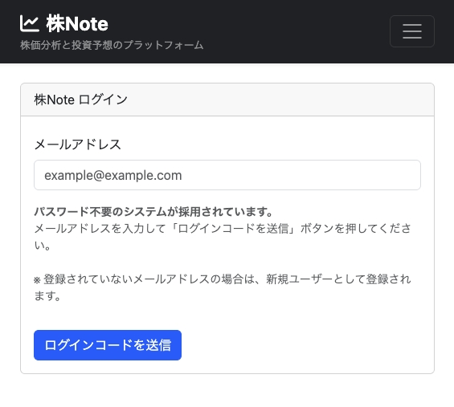

プロジェクト概要：
みんなの株予想収支報告をSNSで共有できるプラットフォームを構築しました。
ユーザーが自分の株取引の予想と結果を記録し、コミュニティと共有できるサービスです。
主な機能：
技術スタック：
開発の特徴：
PHP(Laravel11)とPythonを連携させ、Python側で株価データを取得・処理し、
Laravel側でユーザー管理やUIを提供するハイブリッドアーキテクチャを採用しました。
これにより、データ処理の効率性とWebアプリケーションの開発速度を両立しています。
担当範囲：
要件定義から設計、開発、テスト、デプロイまで一貫して担当。
特にバックエンドAPI設計とフロントエンドのUI/UX設計に注力しました。
プロジェクト期間：
2024年1月〜2024年6月（6ヶ月）
成果：
ベータ版リリース後、3ヶ月で100名以上のユーザーを獲得。
ユーザーからのフィードバックを元に継続的に改善を実施しています。